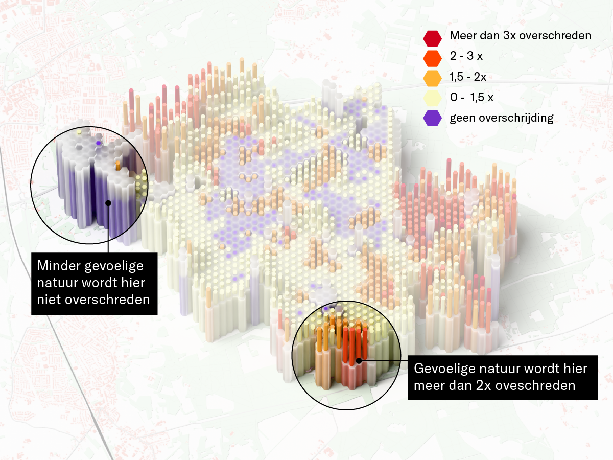
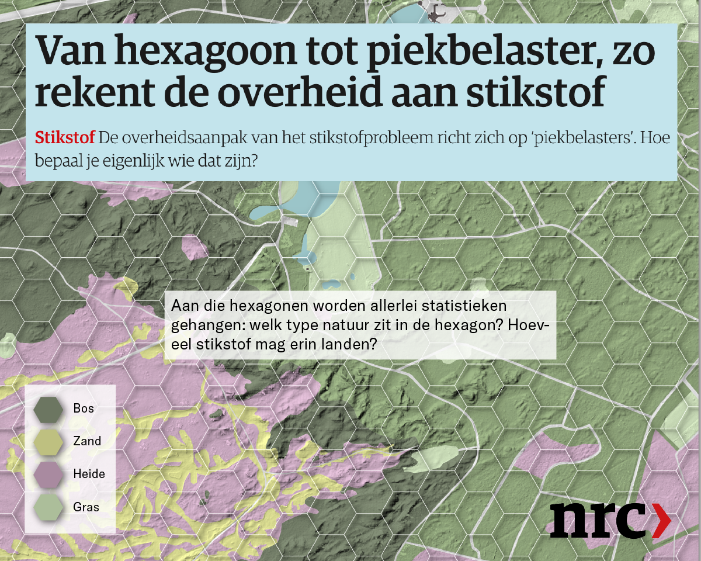
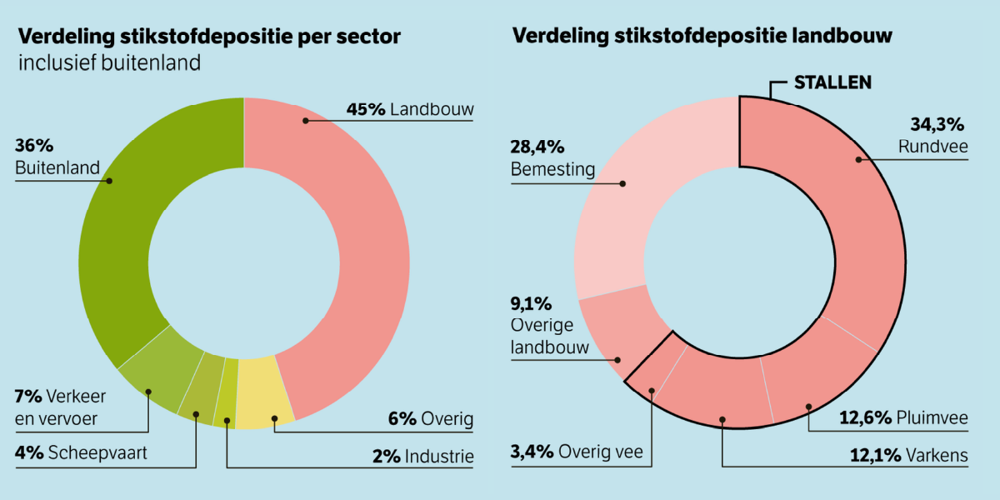
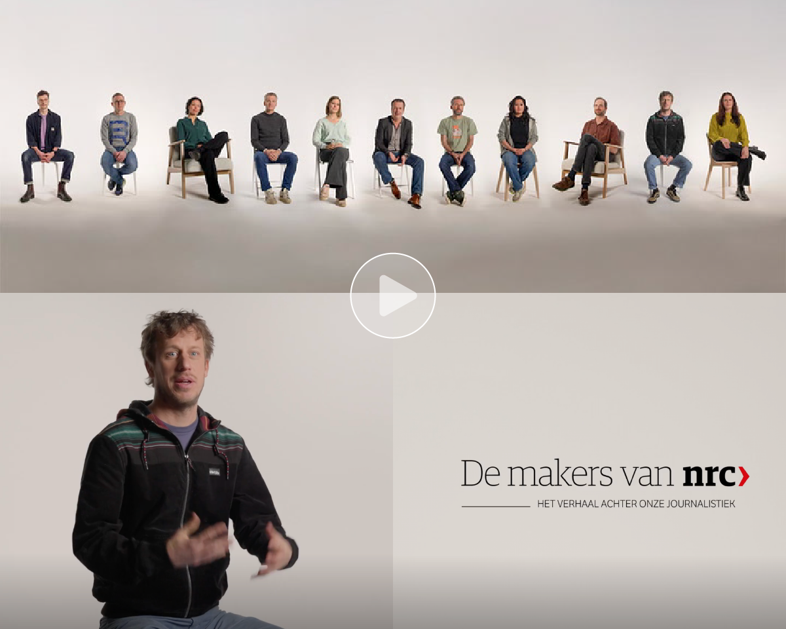
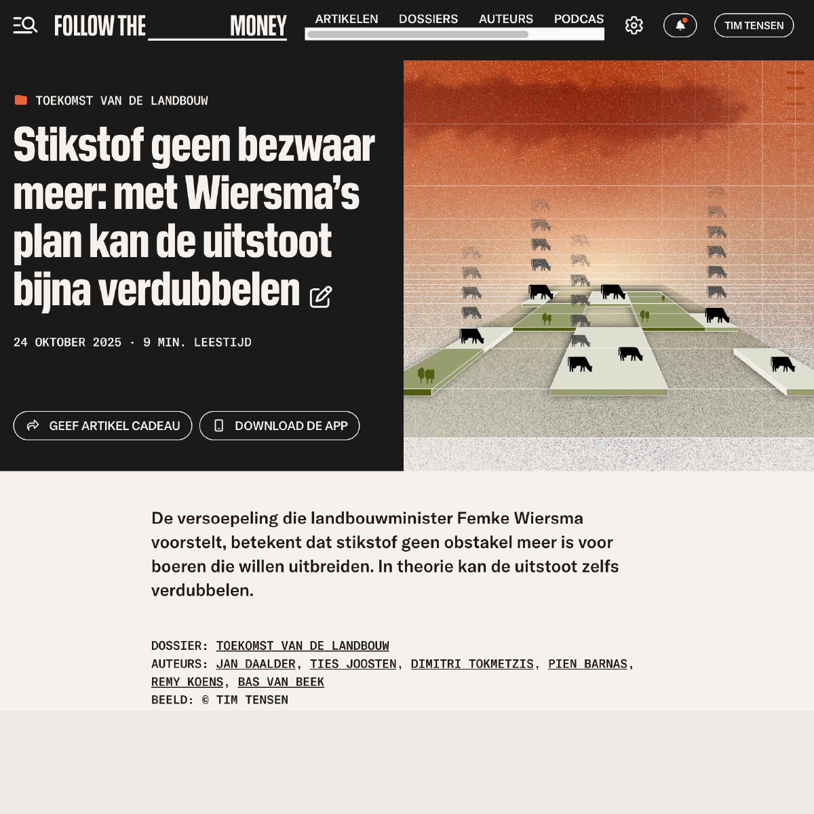
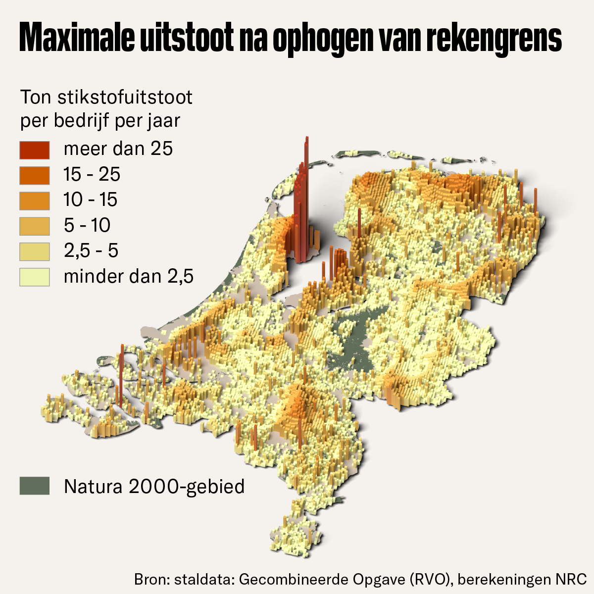
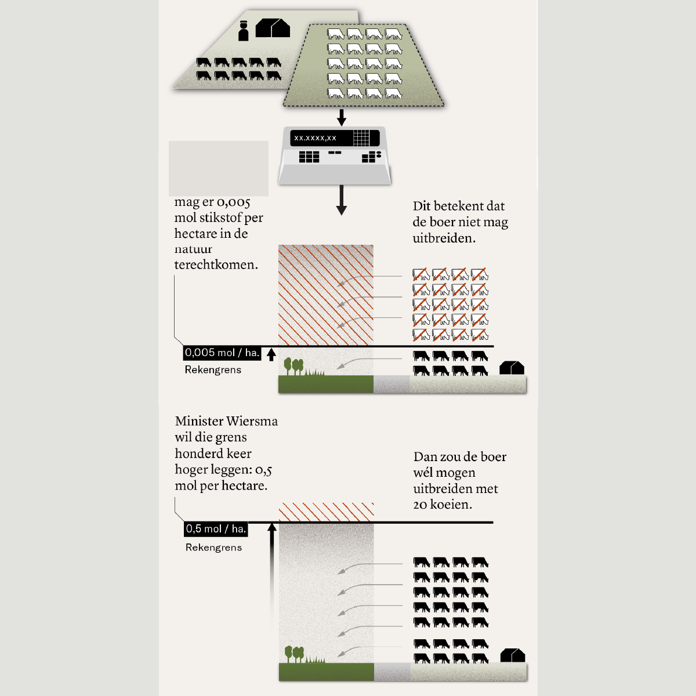

Explainer stikstofgevoelige natuur
Een herontwerp van de datavisualisaties die ik in 2023 maakte voor het NRC (zie hieronder) over de stikstofcrisis in Nederland. In dit herontwerp leg ik de nadruk op het verschil in stikstofgevoeligheid per type natuur en laat ik zien hoe die grenzen in veel gebieden worden overschreden. Aan de hand van een klein natuurgebied laat ik zien dat ieder type natuur zijn eigen stikstofcapaciteit heeft, en hoe kleiner deze capaciteit hoe sneller deze overschreden wordt. De 3D-vorm die ik heb gekozen maakt dit zichtbaar.

Graphic die laat zien dat stikstofgevoelige natuur sneller overbelast wordt door middel van een 3D visualisatie
Animatie die laat zien hoe wordt bepaald wanneer de stikstofnorm wordt overschreden
Van hexagoon tot piekbelaster
De stikstofcrisis, hoe werkt dat precies. Door zelf berekeningen te kunnen maken met het Aerius model (waarmee de overheid de stikstof depositie bepaalt) konden we (NRC) dit goed uitleggen. Waar wordt de norm overschreden, hoe wordt berekend waar de stikstofuistoot vanaf de bron terecht komt en waar bevinden zich de grootste piekbelasters? Doordat ik in staat was zelf de data te doorgronden kon ik het verhaal helder vorm geven. Deze productie is vervolgens opgenomen in een korte video over de makers van NRC.

Visualisatie in NRC: explainer hoe de overheid aan stikstof rekent
Visualisatie van stikstofemissie op basis van eigen doorrekening

Grafische voorstelling van invloed van de landbouw op stikstof

Hier vertel ik over dit project in de video over de makers van NRC.
Met Wiersma’s plan kan de uitstoot bijna verdubbelen
Eind 2025 wilde het kabinet de stikstofgrens versoepelen en daarmee kleine uitbreidingen van veehouders vergunningsvrij maken. Ik bracht in beeld wat het effect is van het verhogen van deze ondergrens voor stikstof: ogenschijnlijk kleine uitbreidingen per bedrijf leiden samen tot een grote toename van uitstoot en druk op natuurgebieden.

Hoofdbeeld voor artikel op FTM

3D visualisatie van de maximale uitstoot

infographic die uitlegt wat het verhogen van de rekengrens betekent